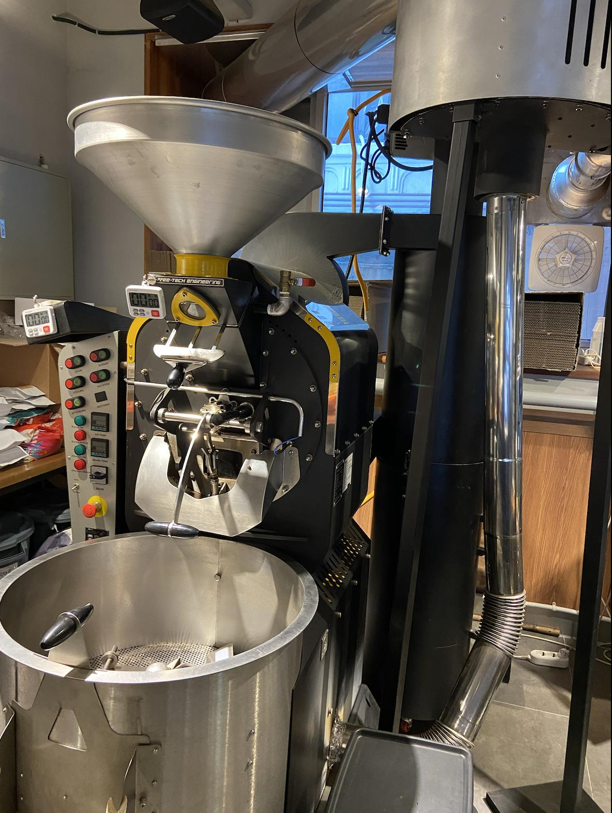
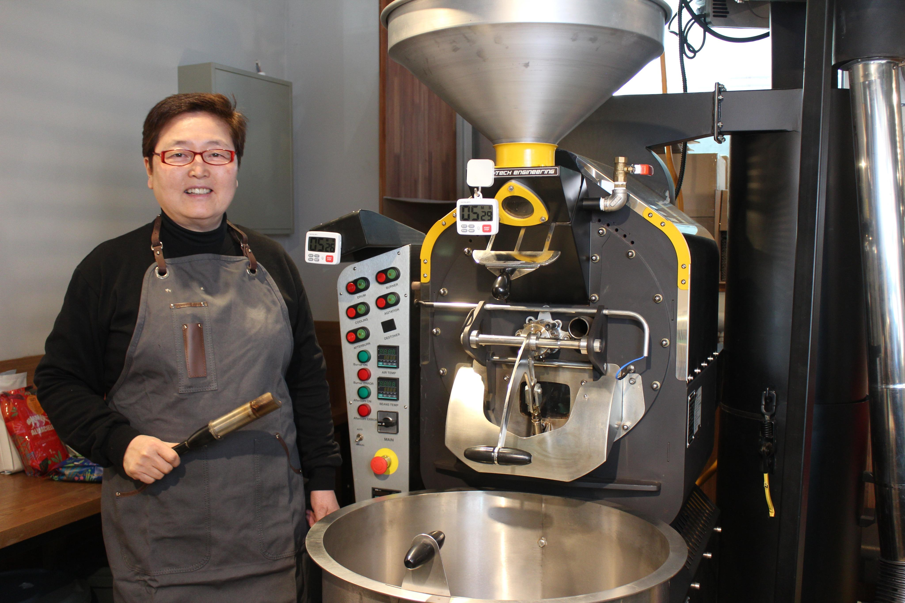

브랜드 소개
우리의 시작
이송글로벌은 2022년 서울에서 설립된 커피 전문 기업으로, 건강하고 일관된 품질의 커피를 위해 오늘도 정성을 다하고 있습니다. 본사는 서울 용산구에 위치하고 있으며, 파주시 탄현면에 위치한 로스팅 공장에서 직접 커피를 생산하고 있습니다.
브랜드의 핵심 가치는 단순한 커피 제공을 넘어, 사람들의 일상 속에 스며드는 따뜻한 경험을 함께 만드는 것입니다.
로스팅의 철학과 기술

이송글로벌은 이스라엘 Coffee Tech Engineering사의 CTE Ghibli R-15 로스팅 머신을 사용하고 있습니다. 이 기계는 적외선 간접열을 활용하여 유해 가스를 줄이고, 열의 흐름이 완벽하게 설계되어 있어 잡미가 거의 없으며, 정교한 파라미터 조절을 통해 원두의 단맛을 섬세하게 이끌어냅니다.
대표자 이송

이송 대표는 30년 이상의 커피 교육 경험과 25년 이상의 로스팅 경험을 갖춘 대한민국 커피 업계의 선구자입니다. 국제 커피 대회 심사와 인증, 커피 교육 활동 등 커피 문화의 발전에 기여해 왔으며, SPC, 웅진식품, 이랜드 등 다양한 기업과의 협업 경험도 보유하고 있습니다.
- 전 WBC 한국 초대 Coordinator 및 대회 위원장
- WBC 아시아 최초 심사위원
- 전 SCAE 한국 초대 Coordinator
- 현 SCAE 커피 인증 시험감독관
- 현 Coffeeology 아시아지역 Certifier
이송글로벌의 커피 철학
우리의 커피는 단순히 맛있는 것을 넘어, 건강하고 지속 가능한 가치까지 담고 있습니다. 다음의 두 가지 원칙은 이송글로벌이 커피를 만들며 지켜가는 중심 축입니다.
- 건강한 커피 만들기: 슬로우 로스팅 기법을 통해 유해 성분을 줄이고, 쓴맛과 탄맛을 절제하여 깔끔하고 건강한 맛을 전달합니다.
- 일관된 품질 유지: 생두 선별에서 납품까지 모든 과정에서 센서리 테스트를 거쳐 항상 같은 품질의 커피를 고객에게 제공합니다.